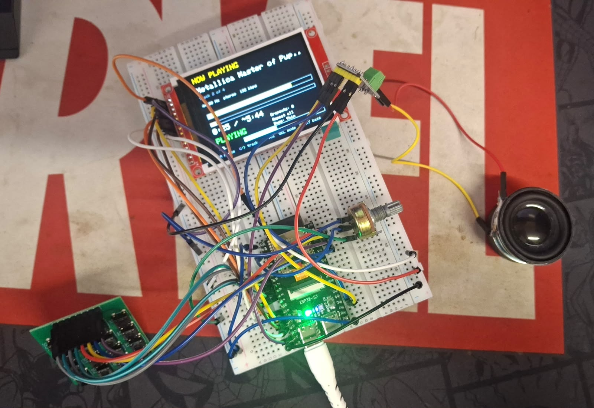
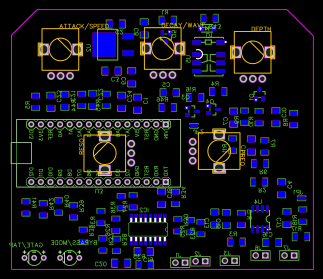
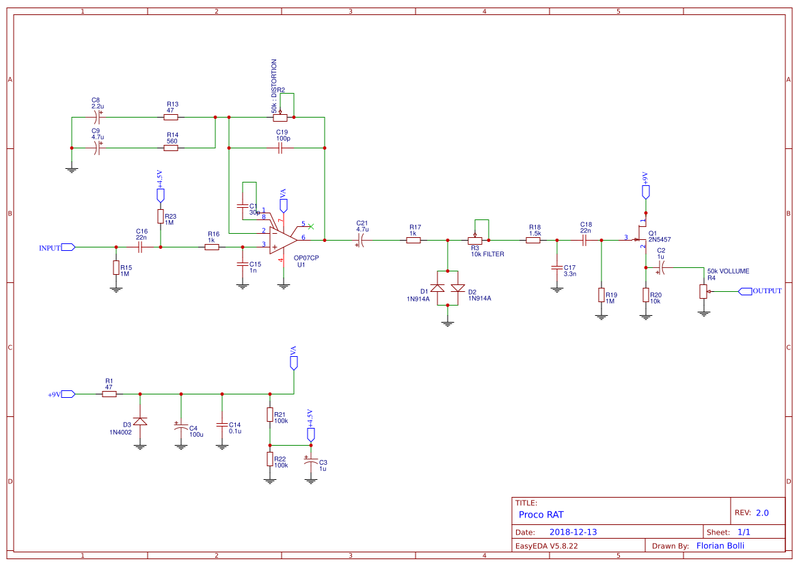
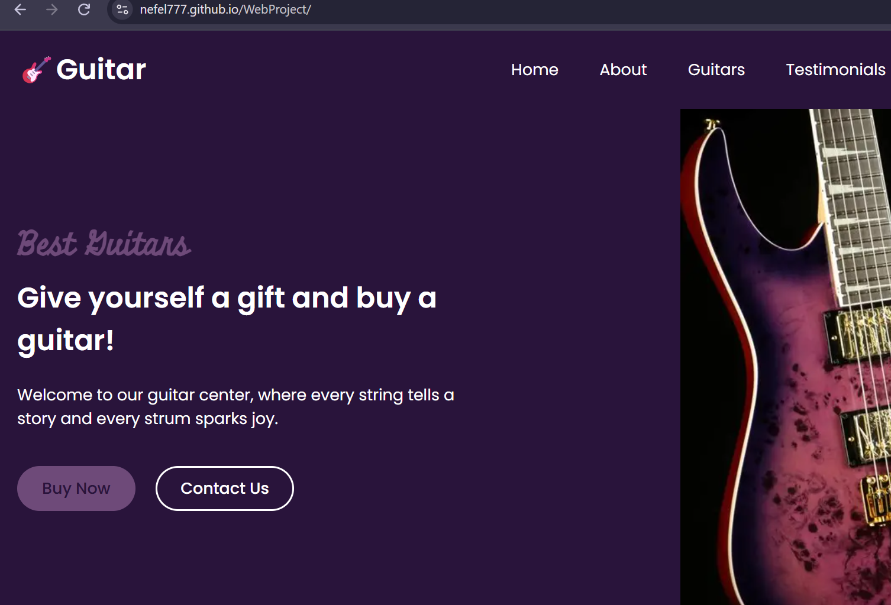

Arduino
Microcontroller programming and hands-on prototyping.
Open to opportunities
Electronics | Programming | Technology
Building. Learning. Engineering.
Driven by curiosity, precision and a passion for technology. A motivated student exploring electronics, programming and engineering.
I am a second-year high school student with a strong academic background and a particular interest in electronics, programming and technology.
I enjoy understanding how things work, analysing electronic circuits and building practical projects using Arduino and PCB technology.
My interests extend beyond technical subjects. I have experience working in an office environment, participating in debates and public speaking activities, and collaborating in educational events.
Areas I work with and keep learning. No ratings – just what I do.
Microcontroller programming and hands-on prototyping.
Turning circuit ideas into printed circuit boards.
Schematic capture and PCB layout software.
Understanding how electronic circuits behave.
Writing code to solve problems and control hardware.
Components, circuits and practical electronic work.
Strong academic performance in the subject.
Strong academic performance in the subject.
Everyday computing and office software.
[Kings Office ]
Practical experience in an office environment, working with printing equipment, document preparation and everyday office tasks.
[Institute Harry T Fultz]
Strong academic performance in Electronics, Mathematics and Physics.
Click any certificate to view it larger.
Participation in the HTMfun Debate Event.
Acting Responsibly on the Web, Accessing Sustainability and Contributing to a More Sustainable Society.
Recognition for high academic performance.
Participated in an event focused on children's rights and delivered a public speech at Parliament.

mp3Arduino MP3 Player built and designed by me . Its a functional Arduino-based MP3 player, combining embedded programming, electronic circuit design and hands-on PCB manufacturing. Components used: Arduino board DFPlayer Mini MP3 module MicroSD card OLED display Rechargeable battery Physical control buttons Rotary encoder Headphone jack Development process: Designed the electronic schematic and PCB layout using EasyEDA. Prepared and exported the manufacturing files. Transferred the design files to the PCB milling machine in the school laboratory. Manufactured the PCB using professional laboratory equipment. Soldered and assembled the electronic components onto the finished board. Tested the assembled circuit and developed practical skills in electronics and hardware prototyping. Skills gained: Arduino programming, circuit design, EasyEDA, PCB manufacturing, soldering, electronic assembly and hardware development.
GitHub
pcb schematicHybrid guitar filter pedal based on a classic State Variable Filter (SVF) topology using the LM13700 and digitally controlled by an Arduino Nano. The analog section implements a 2nd-order SVF (low-pass output used) with fully analog FREQ and RESONANCE controls. Digital control generates a PWM-derived control current (Iabc) for the LM13700, enabling LFO, GATE/Trigger, and dynamic modulation modes without placing digital processing in the audio path. True bypass is implemented via relay switching. Analog and digital power domains are separated for noise isolation. The project targets electronics enthusiasts and guitar players who want a true analog sound core combined with programmable, flexible control architecture.
GitHub
Pedal circuit i've builtElectronic Circuit Analysis – ProCo RAT Distortion Pedal Analysed the schematic of the ProCo RAT, a well-known guitar distortion pedal designed to transform an electric guitar's audio signal into a distorted sound. What the Circuit Does The circuit receives an audio signal from an electric guitar, amplifies it, creates distortion through diode clipping, shapes its frequency response and controls the final output volume. Main Circuit Components - OP07CP Operational Amplifier: Amplifies the incoming audio signal and provides the main gain stage. - 1N914A Diodes: Clip the audio waveform to produce the characteristic distortion effect. - 2N5457 JFET Transistor: Acts as an output buffer. - Resistors and Capacitors: Control current, filtering, signal coupling and circuit biasing. - 50k Distortion Potentiometer: Controls the amount of distortion. - 10k Filter Potentiometer: Adjusts the high-frequency content and tone. - 50k Volume Potentiometer: Controls the final output level. - 1N4002 Diode: Provides reverse-polarity protection. - 9V DC Power Supply: Powers the circuit. Method of Analysis - Identified the power supply, ground connections and voltage reference. - Traced the audio signal from the input to the output. - Divided the schematic into functional stages: power supply, amplification, clipping, filtering and output buffering. - Examined the role of individual electronic components. - Applied knowledge of voltage, current, resistance, capacitors, diodes and operational amplifiers to understand the circuit's operation. Skills Demonstrated: Electronic circuit analysis, schematic interpretation, operational amplifiers, semiconductor components, signal processing, audio electronics and technical problem-solving.
GitHub
WebsiteGuitar Shop Website – Web Development Project Designed and developed a guitar shop website that showcases different guitar models and provides visitors with an engaging browsing experience. Main Features: Homepage: Created a welcoming landing page with a clear introduction and navigation. Guitar Catalogue: Displayed different guitar models with images, names and detailed descriptions. About Us: Added a section introducing the guitar store and its purpose. Customer Testimonials: Included customer reviews to make the website feel more realistic. Image Gallery: Created a visual gallery showcasing guitars. Contact Section: Added contact information and a form for visitor inquiries. Skills Demonstrated: Web development, HTML, CSS, JavaScript, website structure, user interface design and responsive design. Live Website: https://nefel777.github.io/WebProject/
GitHubOpen to first job opportunities.
The CV file was not found. Place your PDF in the project at:
assets/documents/Nefeli_Xhaferaj_CV.pdf
The file name must match exactly. Then refresh the page and the button will download it.